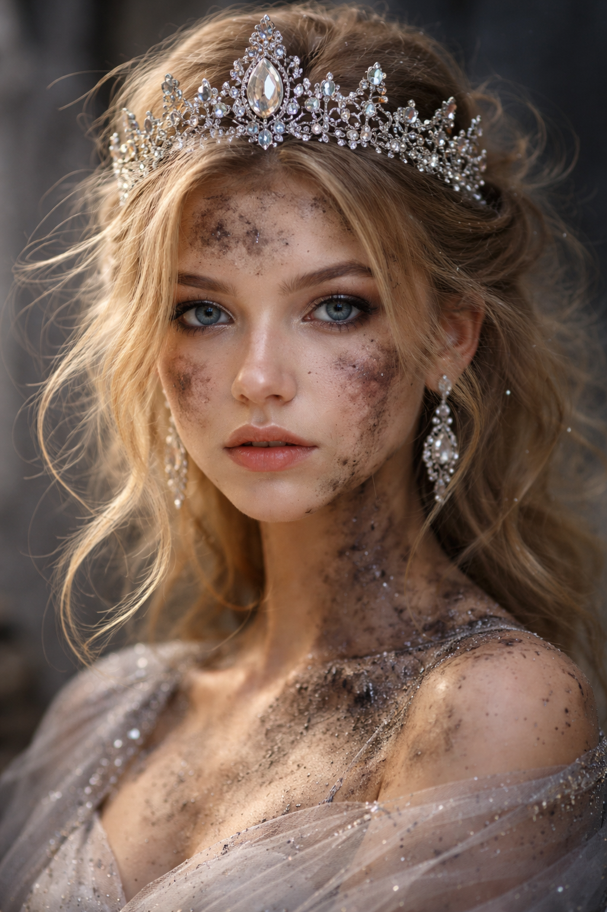

🌈 INVERTED COLORS (stare here)

Negative version – stare at the center for 10 seconds
⚪ BLACK & WHITE
Look here after 10 seconds – colors should appear!
Stare at the inverted image → then watch the black & white one come alive in color

Negative version – stare at the center for 10 seconds
Look here after 10 seconds – colors should appear!